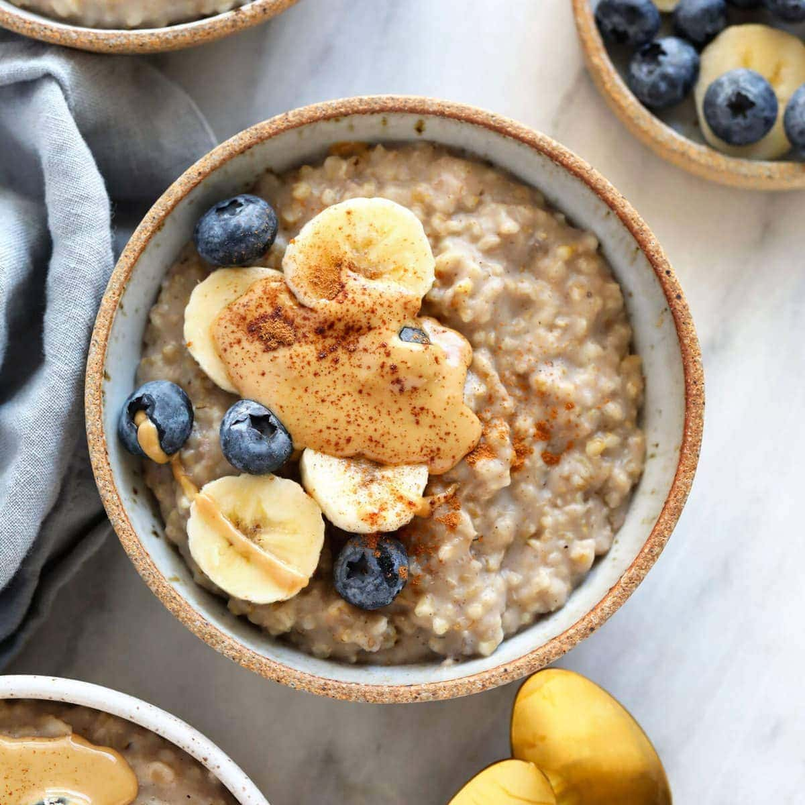

Steel Cut Oats

Description
This recipe contains kefir, which is a fermented milk product that is rich in beneficial bacteria. The nuts and dried fruit provide prebiotic fiber, which helps to feed the beneficial bacteria in your gut. Cinnamon is also known to have antibacterial properties and may help to support a healthy gut microbiome. Enjoy your microbiome-rich steel-cut oats!
Ingredients
- 1 cup of steel-cut oats
- 3 cups of filtered water
- 1/4 cup of plain kefir
- 1/4 cup of chopped nuts (such as almonds, walnuts, or pecans)
- 1/4 cup of dried fruit (such as raisins, cranberries, or chopped apricots)
- tablespoon of honey
- 1/4 teaspoon of ground cinnamon
- Pinch of salt
Steps
- In a large pot, bring the filtered water to a boil. Add the steel-cut oats and salt, reduce the heat to low, and simmer for 20-30 minutes, or until the oats are tender and the liquid has been absorbed. Stir occasionally.
-
- In a small bowl, whisk together the kefir, honey, and ground cinnamon until well combined.
- Once the oats are cooked, remove the pot from the heat and stir in the kefir mixture.
- Divide the oats into serving bowls and top with chopped nuts and dried fruit.